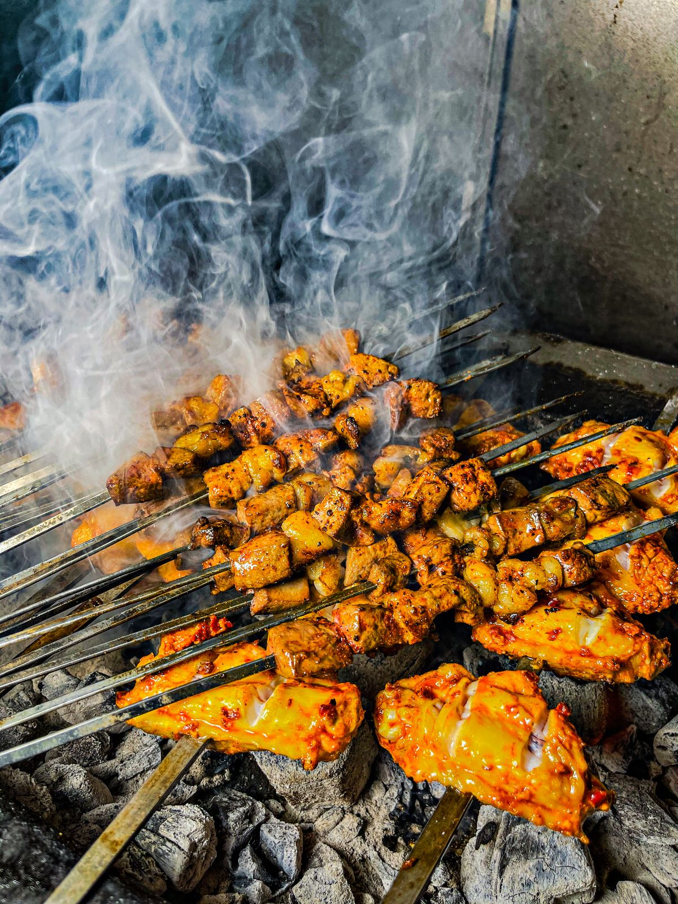

WELKOM BIJ
T'Smoakt
Catering op maat voor uw feesten, groot en klein.
FEESTDAGEN 2026 · BESTELLEN KAN NU
Jij geniet van het gezelschap.
Wij zorgen voor het feestmaal.
Van feestelijke hapjes tot een zoete afsluiter: stel je kerstmenu samen en bestel eenvoudig online.
Bekijk het menu & bestel →Klaar voor jouw kersttafel
Afhalen in Moerbeke-Waas
24, 25 of 26 december
Kies je afhaalmoment in het bestelformulier.Wat hebben we te bieden
Een greep uit onze diensten

OVER ONS
Genieten, samen zijn en dat zonder zorgen.
Wat ooit begon als een hobby gedeeld met vrienden en familie, delen we vandaag met een breder publiek. Van een eenvoudige bestelling tot een volledig verzorgd evenement: we bereiden alles met zorg, verse ingrediënten en liefde voor smaak.
Bespreek uw feest →Vers bereidmet kwaliteitsingrediënten
Op maatformules vrij te combineren
Vanaf 30 personenkleinere groepen in overleg
CONTACT
Loopt het water je al in de mond?
Vertel ons wat je organiseert, voor hoeveel personen en welke formules je interesseren. We bezorgen je graag een voorstel op maat.